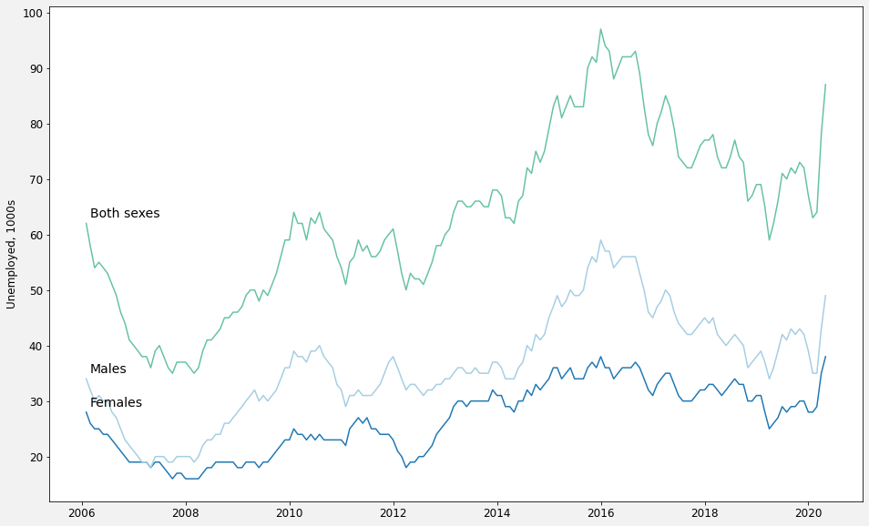
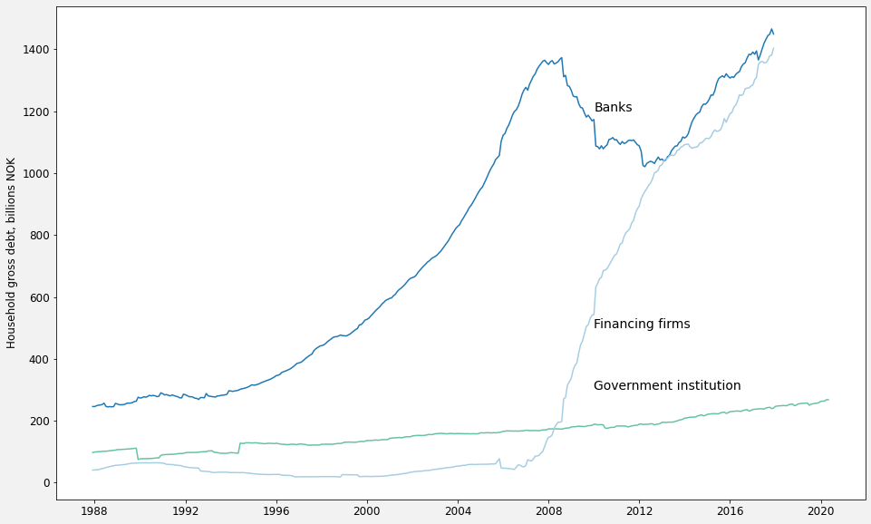
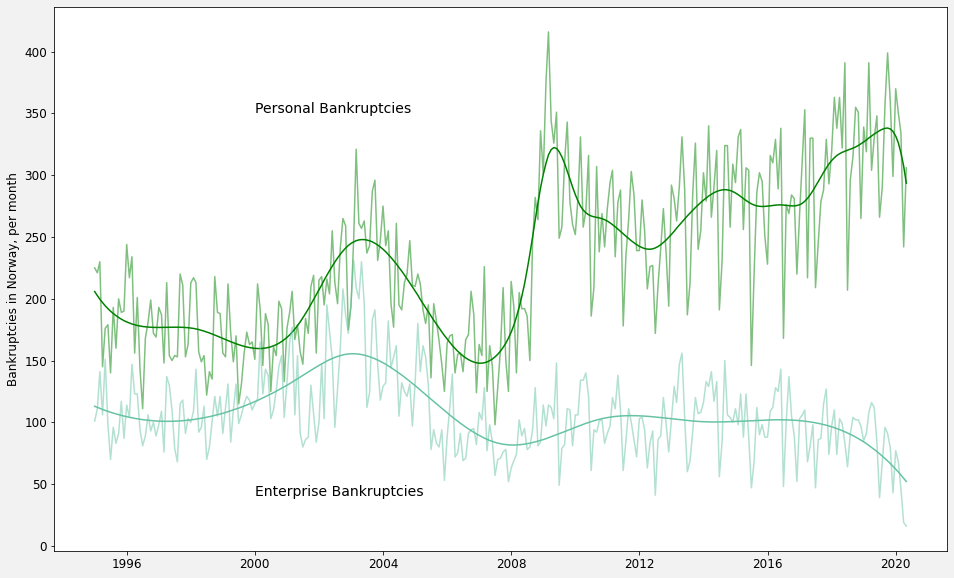
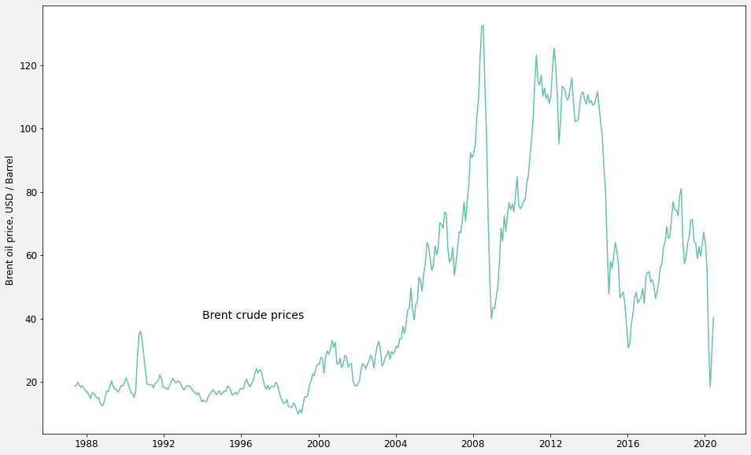

What is omstilling?
Omstilling is a Norwegian word that roughly translates into "realignment". It has been bandied around in Norway quite a lot the last few years for a couple of related reasons.
The most immediate has been the recent, dramatic drop in oil prices.
A more longterm challenge is climate change. Norway is western Europe's largest petroleum producer. For a people who otherwise would like to think that they place a high value on the environment, Norway's economic reliance on oil and gas is an uncomfortable fact.
Norway, it is said, needs to change. It needs a more diverse economy - less reliant on oil and gas. A realignment.
This website is meant as as a source for data on this realignment in real time.
The blog section gives an occasional update and analysis on the state of the economy and country.
But more important is the data section. The goal is to keep an up-to-date, easy to access visual overview of economic and national trends.
Suggestions and comments can be sent to my gmail address, jmaurit.
blog
data
Employment Data
Unemployment*, 1000s, by gender
This measure does not include those that are not actively looking for work, including those on long term disability.
Employment, % of 25-74 year olds, by gender

What surprises me here is how little recovery there was in employment after the financial crisis. Norway never experienced a deep recession after 2008, but we never got back to the solid economic numbers we experienced prior to 2008 either. With starkly lower oil prices, employment is also starting to take
Housing
Home prices, index, 2005=100

Debt, Bankruptcies and Financial Indicators
Gross debt, by sector

Household debt, by source
Non-financial firm debt, by source

Number of bankruptcies
Oil and Gas
Price of Brent Crude Oil
Oil and Gas production on the Norwegian Continental Shelf

about
Contact me at my gmail acount, jmaurit.
My personal website can be found here
Data is primarily from the API of Statistics Norway.
If you want to see how I made the charts using python and matplotlib, see the ipython notebook.